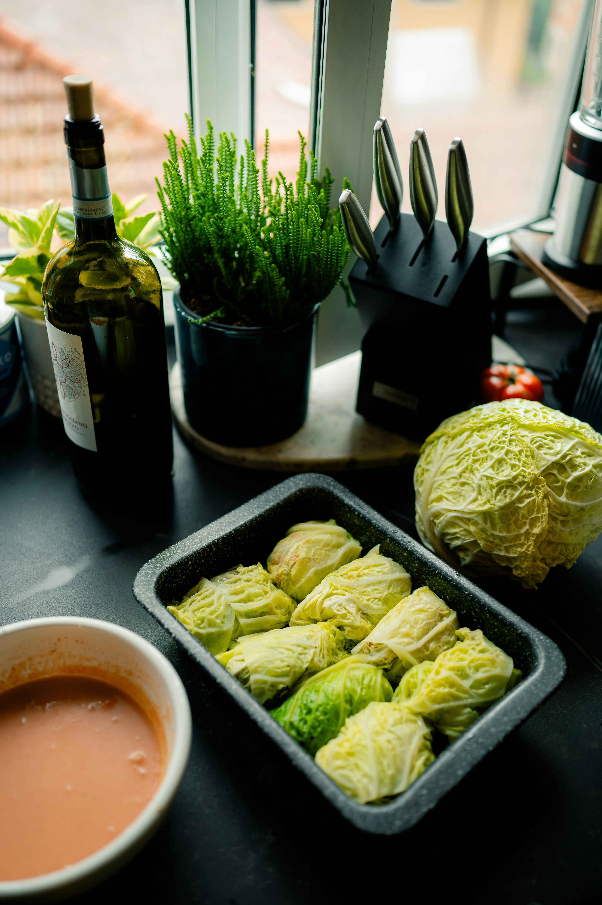

Sarmale

Description
Sarmale is a dish specific to the Balkan region, of turkic or arab influence
Sarmale is particularly a romanian dish, a cabbage roll containing a mix of meat, usually pork or beef and rice, optionally other vegetables
Ingredients
- 500g of Rice
- 1 Cabbage
- 3-4 Thyme Leaves
- 3 Clovers of Garlic
- 1l of Tomato Sauce
- 500 g - Mix of beef and pork meat
- 200g of Peppers
Steps
- Start by cooking the rice and then let it cool down
- Cook the peeled cabbage leaves for 2 hours in a pot of water on low heat
- Mix the rice with the mix of meats and wrap them in cabbage leaves
- Mince the garlic and chop the peppers and add them to a big pot
- After 5 minutes add the tomato sauce with 1l of water
- Let it simmer for 20 minutes and add the thyme leaves and the filled cabbage rolls
- Leave the pot on the stove for 2-3 hours on low heat
- Rest the pot for another 30 minutes and then enjoy the meal
Home